정육쇼케이스
정육쇼케이스 관리, 오래 쓰는 매장의 청소·점검 습관
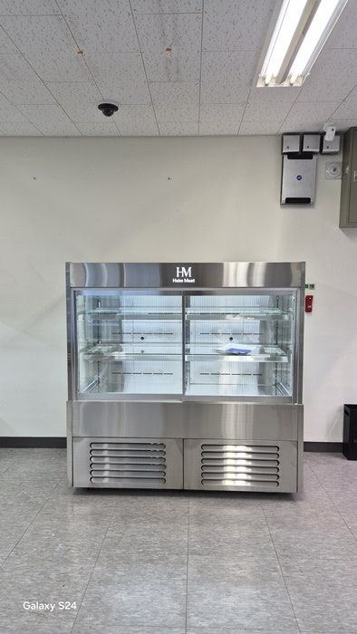
정육쇼케이스 관리는 매일 핏물과 기름을 닦고, 매주 성에와 배수 상태를 보고, 매달 콘덴서 먼지와 문 패킹을 점검하는 순서로 하시면 됩니다. 고기는 작은 온도 변화에도 색이 변하기 때문에, 청소와 함께 냉기가 고르게 도는지 확인하는 습관이 수명과 신선도를 같이 지켜 줍니다.
안녕하세요. 정육점과 식육식당의 쇼케이스를 맞춤으로 제작하는 한성쇼케이스입니다.
정육쇼케이스는 다른 쇼케이스보다 손이 많이 갑니다. 핏물과 기름이 선반에 남고, 습도가 높아 성에도 잘 생기죠.
바쁜 날에는 유리만 닦고 넘어가기 쉬운데, 그렇게 쌓인 것들이 냉기 약화와 고장으로 돌아옵니다.
오늘은 정육쇼케이스를 오래 쓰는 매장들이 실제로 지키는 관리 습관을 매일, 매주, 매달로 나눠 정리해 드리겠습니다.
1. 매일: 핏물과 기름부터 닦기
영업이 끝나면 진열한 고기를 정리하고 선반과 바닥 판에 남은 핏물, 기름을 닦아 주세요. 시간이 지나 굳으면 냄새가 배고 세균이 번식하기 쉬워 다음 날 진열하는 고기에도 영향을 줍니다.
세척은 미지근한 물과 중성세제로 하고, 물기는 마른 천으로 마무리합니다. 강한 세제나 거친 수세미는 스텐 표면과 유리에 흠집을 남기니 피하시는 것이 좋습니다.
매장 바닥 청소를 할 때 쇼케이스 하부로 물이 튀지 않게 조심해 주세요. 하단에는 콤프레셔와 전기 부품이 모여 있어 물이 들어가면 고장의 원인이 됩니다.
물청소가 잦은 매장이라면 하부 주변을 마른걸레로 마무리하는 편이 안전합니다.
- 선반·바닥 판의 핏물을 매일 닦아 주세요.
- 유리 안팎은 부드러운 천으로 닦아 주세요.
- 세척 후 물기를 남기지 마세요.
2. 매주: 성에와 배수 확인
냉각기 주변에 성에가 두껍게 쌓이면 냉기가 고르게 퍼지지 못해 선반 위치마다 온도가 달라집니다. 간냉식은 자동 제상이 되지만, 그래도 성에가 계속 남아 있다면 점검을 받아 보셔야 합니다.
제상수가 빠지는 배수구가 막히면 물이 고여 냄새가 나고 바닥으로 넘치기도 합니다. 일주일에 한 번은 배수구 주변을 살피고 이물질을 걷어 내 주세요.

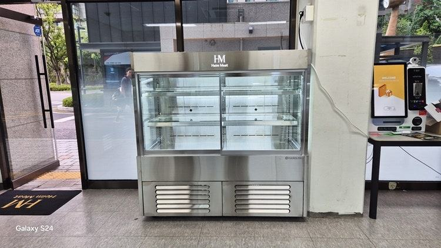
3. 매달: 콘덴서 먼지와 문 패킹
쇼케이스 아래나 뒤쪽 열 배출구에 먼지가 쌓이면 열이 빠지지 않아 콤프레셔가 쉬지 못합니다. 전원을 끈 뒤 부드러운 솔이나 청소기로 먼지를 걷어 내면 냉각 효율과 수명 모두에 도움이 됩니다.
문이 있는 정육쇼케이스라면 패킹도 확인해 주세요. 패킹이 찢어지거나 들뜨면 틈으로 냉기가 새고 그 자리에 성에가 생깁니다.
문을 닫은 채 종이를 끼워 쉽게 빠지는 곳이 있는지 보시면 됩니다.
- 열 배출구 주변에 물건을 쌓지 마세요.
- 패킹 갈라짐과 들뜸을 손으로 눌러 확인하세요.
4. 진열 습관도 관리입니다
고기를 냉기 토출구 앞까지 꽉 채우면 공기가 돌지 못해 뒤쪽과 앞쪽 온도 차가 커집니다. 토출구와 흡입구 앞은 비워 두고, 선반마다 여유를 두고 진열해 주세요.
온도 표시창은 출근할 때와 마감할 때 두 번 확인하는 습관을 들이시면 좋습니다. 평소보다 온도가 잘 안 내려가거나 소리가 달라졌다면 고기가 상하기 전에 A/S를 먼저 접수하시는 것이 손실을 줄이는 길입니다.
체크리스트
- 매일 선반·바닥 핏물과 기름 청소
- 매주 성에 상태와 배수구 확인
- 매달 열 배출구 먼지 제거
- 문 패킹 갈라짐·들뜸 점검
- 냉기 토출구 앞 비워 두기
- 출근·마감 때 온도 표시 확인
경기도 24시 무인 정육 매장 납품 사례
경기도의 24시간 프리미엄 정육 매장에 고기쇼케이스를 납품했습니다. 무인으로 운영하는 매장이라 사장님께서 처음부터 "새벽에 냉장고가 고장 나면 어떡하냐"는 걱정을 가장 크게 하셨습니다.
사람이 상주하지 않으니 이상이 생겨도 바로 알아채기 어렵기 때문입니다.
그래서 냉기가 구석구석 고르게 닿도록 내부 공기 순환과 냉기 흐름을 계산해 설계했습니다. 선반 층마다 온도가 달라지거나 성에가 끼는 문제를 줄이는 데 초점을 맞췄고, 프레임 색상과 조명, 선반 단차는 매장 도면과 분위기에 맞춰 정했습니다.
납품 후에는 1년 무상 A/S를 지원하며, 무인 매장일수록 앞에서 정리한 관리 습관을 정해진 시간에 챙기시도록 안내해 드렸습니다.
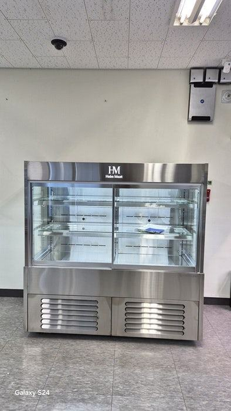
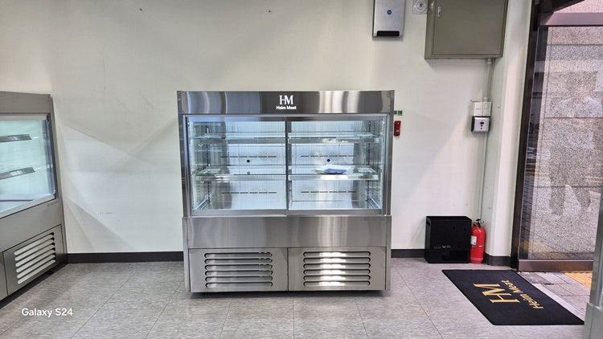
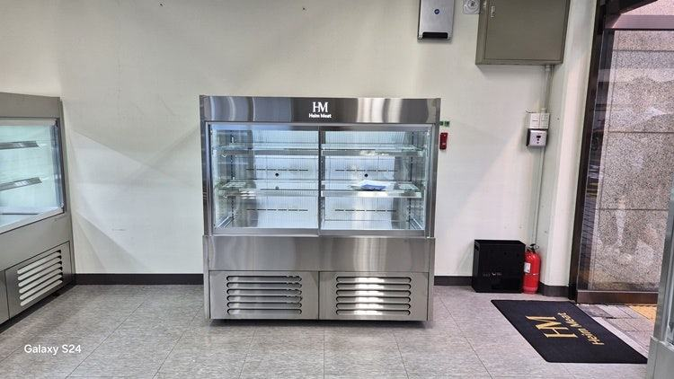
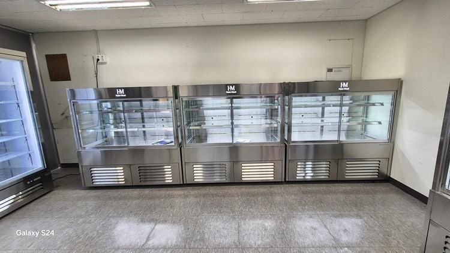
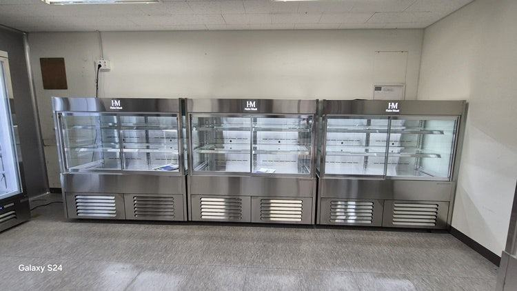
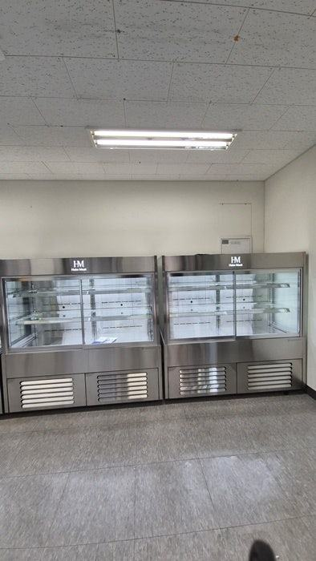
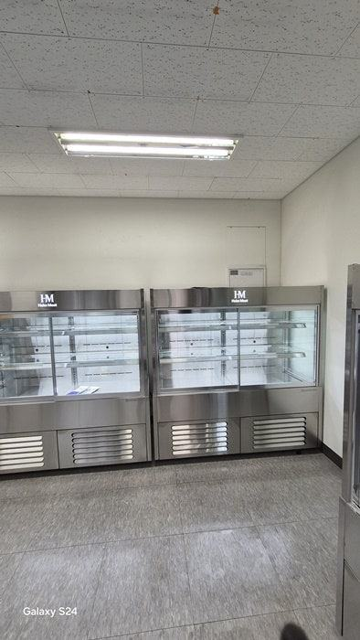
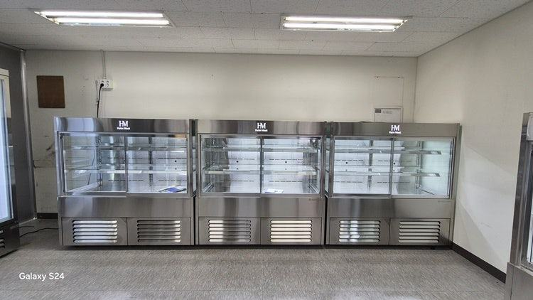
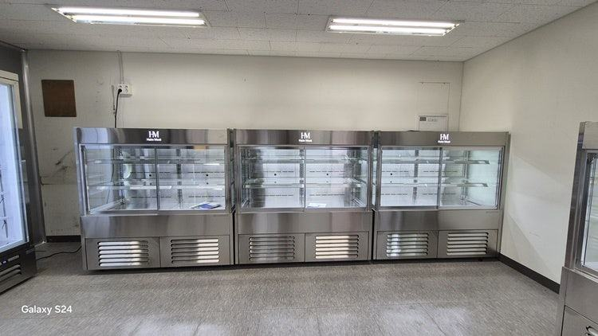

자주 묻는 질문
정육쇼케이스 유리에 김이 자주 서리는데 고장인가요?
매장 습도가 높거나 문 패킹 틈으로 공기가 들어오면 생길 수 있습니다. 패킹 상태와 주변 습도를 먼저 확인해 보시고, 계속된다면 점검을 받아 보세요.
청소할 때 전원을 꺼야 하나요?
선반과 유리를 닦는 매일 청소는 켜 둔 채로 해도 됩니다. 열 배출구 먼지 제거처럼 기계 부위를 만질 때는 반드시 전원을 끄고 진행해 주세요.
무인 정육점은 관리를 어떻게 해야 하나요?
사람이 없는 시간이 길어 이상을 늦게 발견하기 쉬우니, 하루 두 번 정해진 시간에 온도와 소리를 확인하는 습관이 중요합니다.
한성쇼케이스는 전국 240여 개 A/S 센터를 운영하고 있어 지역과 상관없이 접수하실 수 있습니다.
매장 조건에 맞춰 만드는 한성쇼케이스
원하시는 제품 사진과 설치할 공간 사진만 보내 주셔도 매장에 맞는 구성을 추천해 드립니다.
- 전국 240여 개 A/S 전담 센터 운영
- 본사 대량 자재 매입으로 품질 대비 합리적인 가격
- 유럽제·삼성 냉각 콤프레셔 적용
- 국내 최초 쇼케이스 전문 디자이너 상주
매장 폭과 원하는 진열 구성을 알려 주세요. 실측과 견적을 안내해 드립니다.
031-986-2458